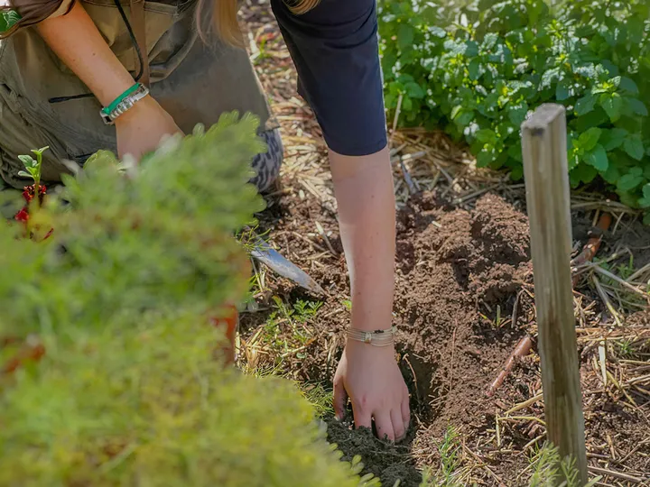
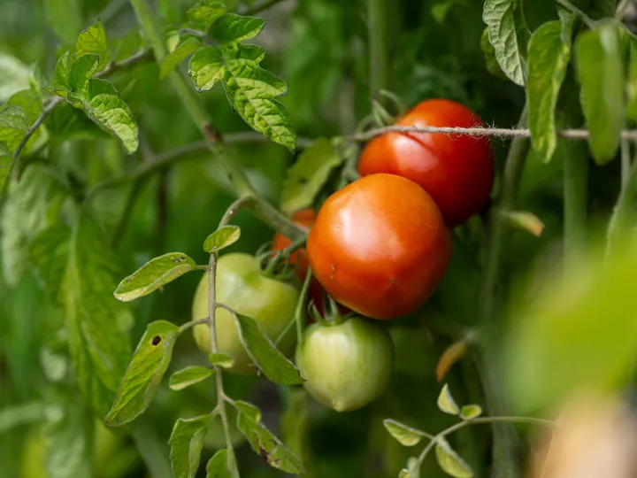
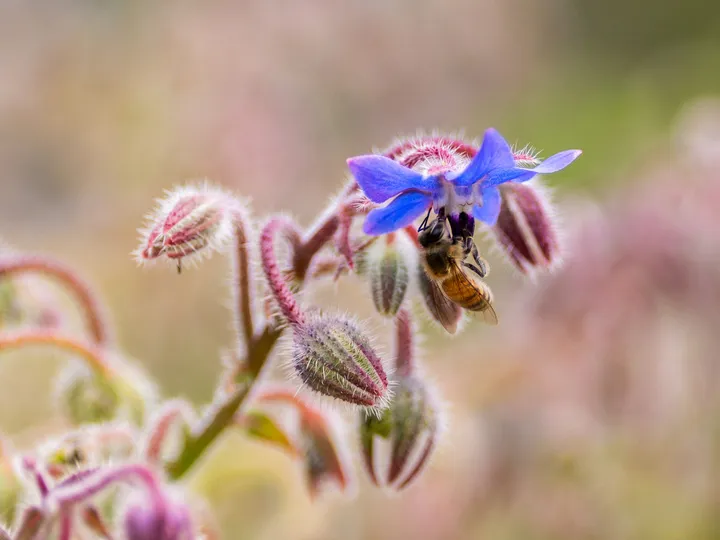
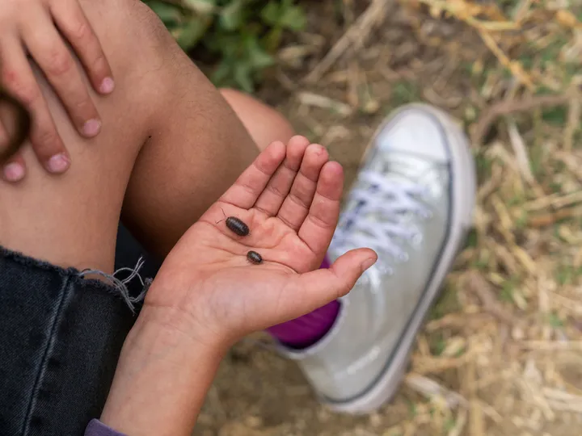

Will Rogers Regenerative Farm
1550 Maple Street, at the corner of 16th & Maple
Half an acre on our campus where students grow food, build healthy soil, and learn from nature. It’s one of the first working regenerative farms on a school campus in the Los Angeles area.
The farm is cared for by GROW/WILD in partnership with the Will Rogers Learning Community and SMMUSD.
What happens at the farm
An outdoor classroom
Students learn science, math, and more with their hands in the soil: planting, harvesting, composting, and watching what grows, season by season.
Regenerative by design
Cover crops, fruit trees planted among the vegetables, compost made from school food scraps, and drought-tolerant flowers for pollinators all build healthy soil and pull carbon from the air.
Habitat & harvest
Native plant gardens, a reflection garden, a young fruit orchard, and vegetable beds make the farm a home for bees, birds, and butterflies, and a source of fresh food for our community.
Growing season




Photos courtesy of GROW/WILD (opens in a new tab)
Who cares for the farm
The farm opened in the 2021–22 school year, started by Will Rogers parents and local farmers who wanted our kids to grow up knowing where food comes from.
Today it’s stewarded by GROW/WILD, a Los Angeles nonprofit that turns open spaces into thriving habitats and builds resilient communities through land stewardship, regenerative growing, and advocacy for nature. GROW/WILD partners with the Will Rogers Learning Community and the Santa Monica-Malibu Unified School District to care for the half-acre site and bring nature-based learning to every student. Our farm is its pilot project.
Get involved
Lend a hand
Help care for the gardens, restore habitat, or pitch in at farm events. Families are welcome.
Email info@growwild.orgCome to the farm
Picnics, festivals, and farm days are open to the whole Will Rogers community. Upcoming dates are below and in the Wednesday newsletter.
See what’s coming upSupport the farm
Donations to GROW/WILD keep the farm growing and help bring projects like ours to more schools across Los Angeles.
Donate to GROW/WILD (opens in a new tab)
Coming up at the farm
Nothing on the farm calendar right now. New dates land in the Wednesday newsletter.